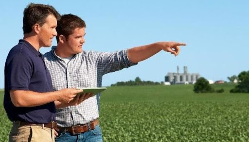

Job Description
Farm Operations Manager

What you will be doing:
- Overall in charge of operations – packing house, sales, set-up, workshop, admin matters.
- Oversee day-to-day operation of entire farm.
- Create an inspiring team environment with an open communication culture.
- Set clear team goals, delegate tasks and set deadlines.
- Improve operational system and processes.
- Purchase goods, plan inventory.
- Perform quality controls and monitor production KPIs frequently.